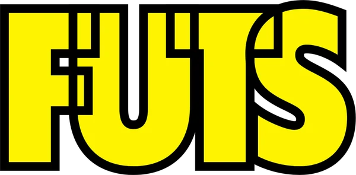
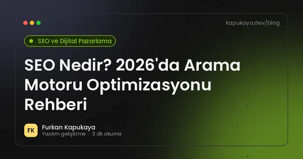

İşletmenizin işleyişine uygun yazılım çözümleri.
Masaüstü uygulamaları, web siteleri, yönetim panelleri ve sistem entegrasyonları. İhtiyacınızı dinliyor, ekibinizin her gün rahatça kullanacağı yazılımı birlikte kuruyorum.
- 2021yılından beri yazılım geliştirme
- 8işletmeye yazılım ve web çözümü
- 4yayında Chrome eklentisi
Simgelere tıklayarak bilgisayarın içinde gezinebilirsiniz. Ekranlar ve veriler temsilidir.
Hizmet verilen işletmelerden bazıları


Hizmetler
Ayrıntıları görmek için bir hizmete tıklayın.
Masaüstü uygulamaları
Stok, satış, randevu ve kasa tek Windows programında.
Kurumsal web siteleri
Hızlı, mobil uyumlu ve Google'da bulunan siteler.
Yönetim panelleri
Her cihazdan erişilen, yetkili iş takip ekranları.
API ve entegrasyon
ERP, e-fatura, pazaryeri ve ödeme arasında otomatik veri.
Otomasyon araçları
Rapor, aktarım ve bildirimleri arka planda yapan araçlar.
Tarayıcı eklentileri
Tarayıcıda tekrarlanan işleri tek tıka indiren eklentiler.
Referans projeler
Farklı sektörlerdeki işletmeler için geliştirilen projelerden bazıları.
İki dakikada ihtiyacınızı netleştirin
Herkesin kullanabileceği küçük, ücretsiz araçlar. Her şey tarayıcınızda çalışır, hiçbir bilgi kaydedilmez.
Elle yapılan, tekrar eden bir işi düşünün: Excel'e veri girmek, rapor hazırlamak, bilgileri bir yerden diğerine taşımak.
0saat / yıl
- Haftalık0 saat
- İş günü karşılığı0 gün
- Yıllık tahmini maliyet₺0
Bu sürenin yarısını otomatikleştirmek bile yılda 0 saat kazandırır.
48 çalışma haftası ve 8 saatlik iş günü varsayılmıştır; sonuçlar tahminidir.Aklınızdaki fikri yazılımcıya nasıl anlatacağınızı bilmiyor musunuz? Birkaç soruyu cevaplayın, düzenli bir proje özeti hazırlansın.
Proje özetiniz
Soruları doldurdukça özetiniz burada oluşacak.
Şifre oluştur
Şifre gücünü test et
Bir şifre yazın
Menünüz, web siteniz, Wi-Fi şifreniz veya Google yorum sayfanız için saniyeler içinde QR kod hazırlayın; masaya, kartvizite ya da vitrine koyun.
Bilgileri girdiğinizde QR kodunuz burada görünecek.
Fiyat verirken veya fatura kontrol ederken KDV'yi hızlıca hesaplayın.
- KDV hariç tutar₺0
- KDV tutarı₺0
- KDV dahil toplam₺0
Sitenizin Google sonuçlarında nasıl görüneceğini önizleyin; başlık ve açıklamanın kesilip kesilmediğini görün.
Süreç nasıl ilerliyor?
İlk görüşmeden teslim sonrası desteğe kadar her adım planlı ve şeffaf.
- 1
Ön görüşme
İş akışınızı ve beklentilerinizi dinlerim.
- 2
Kapsam ve teklif
İşler, süre ve bütçe yazılı olarak netleşir.
- 3
Geliştirme
Çalışan ara sürümlerle birlikte ilerleriz.
- 4
Teslim ve kurulum
Kurulum yapılır, ekibiniz bilgilendirilir.
- 5
Destek
Sorunlar ve yeni ihtiyaçlar için yanınızdayım.
Furkan Kapukaya
2021’den bu yana profesyonel olarak yazılım geliştirmekteyim. E-ticaret ve kurumsal yazılım ekiplerinde C# ve .NET teknolojileriyle edindiğim deneyimi, bugün işletmelere özel yazılım çözümleri geliştirmek için kullanıyorum.
Her projede önce işletmenin gerçek iş akışı analiz edilir; ardından günlük kullanımı kolaylaştıran, sürdürülebilir ve güvenilir çözümler tasarlanır.
- Deneyim
- 2021’den beri yazılım geliştirme
- Ana teknolojiler
- C#, .NET, ASP.NET Core, SQL Server
- Eğitim
- Bilgisayar Programcılığı, Yönetim Bilişim Sistemleri
Referanslar
Etkileyici teknolojik bilgisine rağmen Furkan’ın en önemli özelliği, programlama becerilerinden ziyade esnek zekâsı, kişisel disiplini ve güvenilirliğidir.
Sorun çözen ve işleri yoluna koyan biridir.
Daha ilk görüşmeden itibaren, ona verdiğiniz işi sürekli kontrol etmenize gerek olmadığını fark ediyorsunuz.
Birlikte çalıştığımız dönemde Furkan ile çalışmak, özellikle iş disiplini, olayları yorumlama becerisi, problem çözme yeteneği ve pratik zekâsıyla büyük bir keyifti. Bu projede yollarımız ayrılmış olsa da gelecekte aynı ekipte olmak isteyeceğim ve her anlamda referans olabileceğim bir arkadaştır.
Furkan ile birlikte çalıştığımız dönemlerde görevleri hızlı ve kaliteli bir şekilde tamamlaması, analitik zekâsının ve yeteneğinin en büyük göstergesidir. Her zaman birlikte çalışmak isteyeceğim biri.
Tüm referanslar için özgeçmiş sayfasını inceleyebilirsiniz.
Ürünler
Müşteri projelerinin yanı sıra geliştirilen Chrome tarayıcı eklentileri.
Volumora
Tarayıcı sekmesindeki sesi yükselten, ekolayzır ve ses iyileştirme ayarları sunan eklenti.
Gizlilik politikasıMağazada görAssetify
Bir web sayfasındaki görselleri, videoları, renkleri ve yazı tiplerini bulup indirmeyi kolaylaştırır.
Gizlilik politikasıMağazada görCopy Unlocker
Metin seçimi, kopyalama ve sağ tıklamanın engellendiği sayfalarda bu işlevleri yeniden açar.
Gizlilik politikasıMağazada görFK Social Hub
X, Instagram, TikTok ve YouTube için analiz, trend keşfi ve yapay zekâ destekli içerik araçları.
Gizlilik politikasıMağazada gör
Blog
Yazılım projeleri, otomasyon ve web teknolojileri üzerine yazılar.

Web Sitesi Yaptırmak Ne Kadar Tutar? 2026 Maliyet Rehberi
Web sitesi fiyatlarını belirleyen tasarım, sayfa sayısı, altyapı, içerik, hosting ve bakım kalemlerini 2026 koşullarıyla açıklayan rehber.
Yazıyı oku
SEO Nedir? 2026'da Arama Motoru Optimizasyonu Rehberi
SEO'nun ne olduğu, teknik SEO, içerik ve otorite ayakları, yapay zekâ destekli arama sonuçlarının etkisi ve işletmeler için uygulanabilir ilk adımlar.
Yazıyı oku
Stok Takip Programı Nasıl Seçilir? İşletmeler İçin Rehber
Stok takip programında olması gereken özellikler, barkod ve çoklu depo desteği, raporlama, hazır ve özel yazılım karşılaştırması ile seçim kriterleri.
Yazıyı oku
Sık sorulan sorular
Proje süreci ve hizmetler hakkında en çok merak edilen konular.
Hangi tür yazılım projeleri geliştiriliyor?
Windows masaüstü uygulamaları, kurumsal web siteleri, web tabanlı yönetim panelleri, C# konsol uygulamaları, API ve sistem entegrasyonları ile Chrome tarayıcı eklentileri geliştirilmektedir.
Hangi teknolojiler kullanılıyor?
Ağırlıklı olarak C#, .NET, ASP.NET Core, Entity Framework ve SQL Server; web tarafında HTML, CSS, JavaScript ve Bootstrap kullanılır. Teknoloji seçimi projenin ihtiyacına göre yapılır.
Proje süreci nasıl başlıyor?
İletişim formu veya e-posta ile talebinizi iletmenizin ardından bir ön görüşme planlanır. İhtiyaçlar netleştikten sonra kapsam, süre ve bütçe yazılı olarak paylaşılır.
Fiyatlandırma nasıl belirleniyor?
Her proje kapsamına, süresine ve teknik gereksinimlerine göre ayrı değerlendirilir. Ön görüşmenin ardından projeye özel bir teklif hazırlanır.
Uzaktan çalışma mümkün mü?
Evet. İstanbul merkezli olarak Türkiye genelindeki işletmelere uzaktan hizmet verilmektedir. Gerekli durumlarda yüz yüze görüşme de planlanabilir.
Teslim sonrasında destek sağlanıyor mu?
Evet. Teslim sonrasında oluşabilecek sorunlar ve yeni ihtiyaçlar için teknik destek sağlanır; destek kapsamı projeye göre belirlenir.
Projenizi değerlendirelim
Projeniz için kısa bir bilgi yeterli; en kısa sürede dönüş yapılır. İstek, öneri veya şikâyetlerinizi de aynı formdan iletebilirsiniz.
- E-postainfo@kapukaya.dev
- LinkedInfurkankapukayaa
- Konumİstanbul, Türkiye